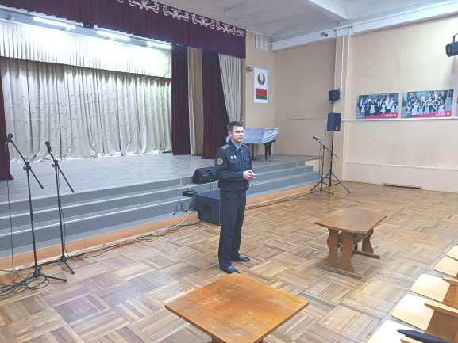
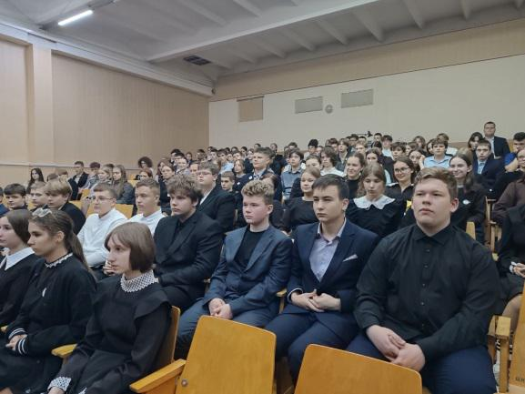
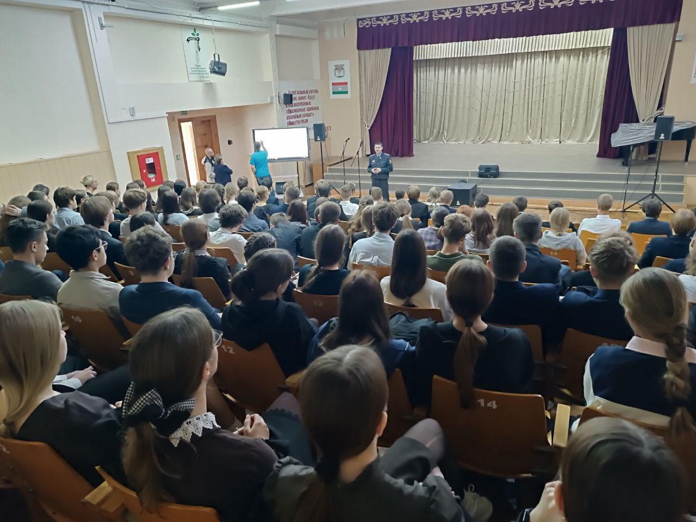
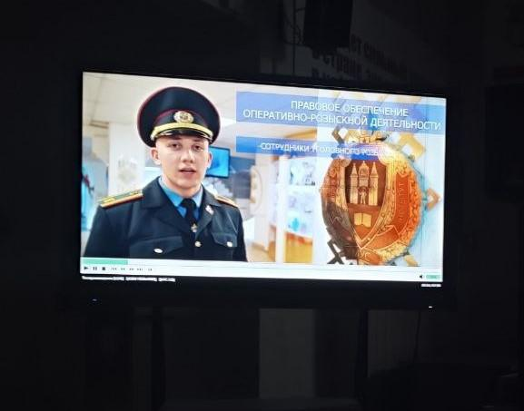

НА СТРАЖЕ ЗАКОНА
23 сентября с учащимися 9-11 классов прошла профориентационная встреча с временно исполняющим обязанности заместителя Борисовского отдела Департамента охраны по идеологической работе старшим лейтенантом милиции Алексеем Зеваличем.

В ходе встречи Алексей Сергеевич продемонстрировал визитный видеоролик об учреждении образования «Могилевский институт МВД Республики Беларусь» и рассказал старшеклассникам о порядке поступления в ВУЗ, требованиях, предъявляемых к абитуриентам, образовательном процессе и быте курсантам, довел особенности прохождения медицинской комиссии и вопросы подачи документов.

В заключении выступления Алексей Сергеевич остановился на вопросах профилактики правонарушений, которые в настоящее время имеют место в молодежной среде. В частности офицер довел уголовную ответственность за совершение преступлений экстремистского характера, в том числе связанных с общением в социальных сетях. Особое внимание представитель Департамента охраны обратил на социальные последствия противоправных действий.

